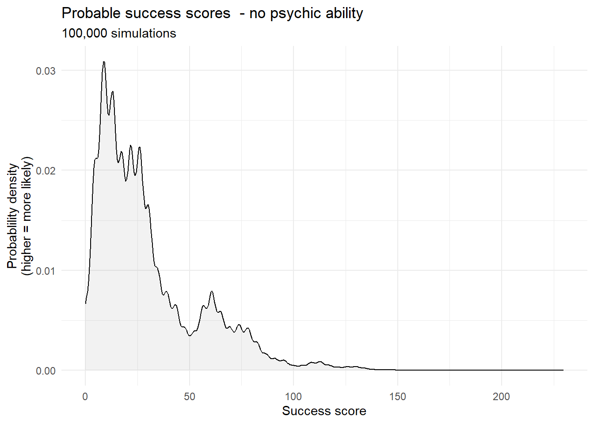
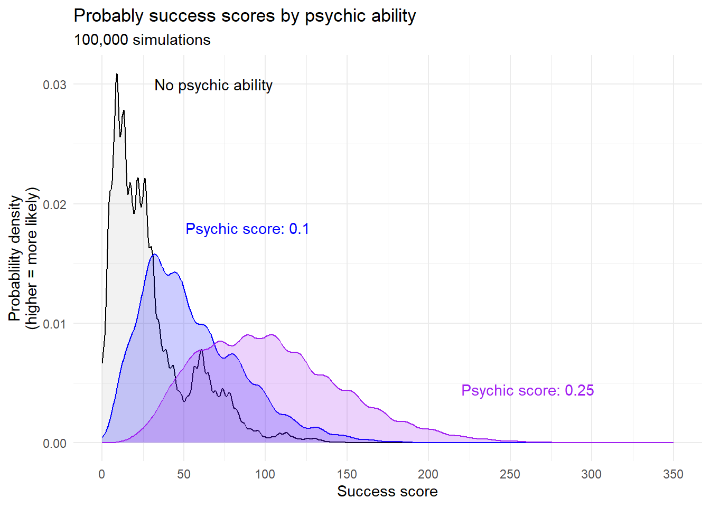
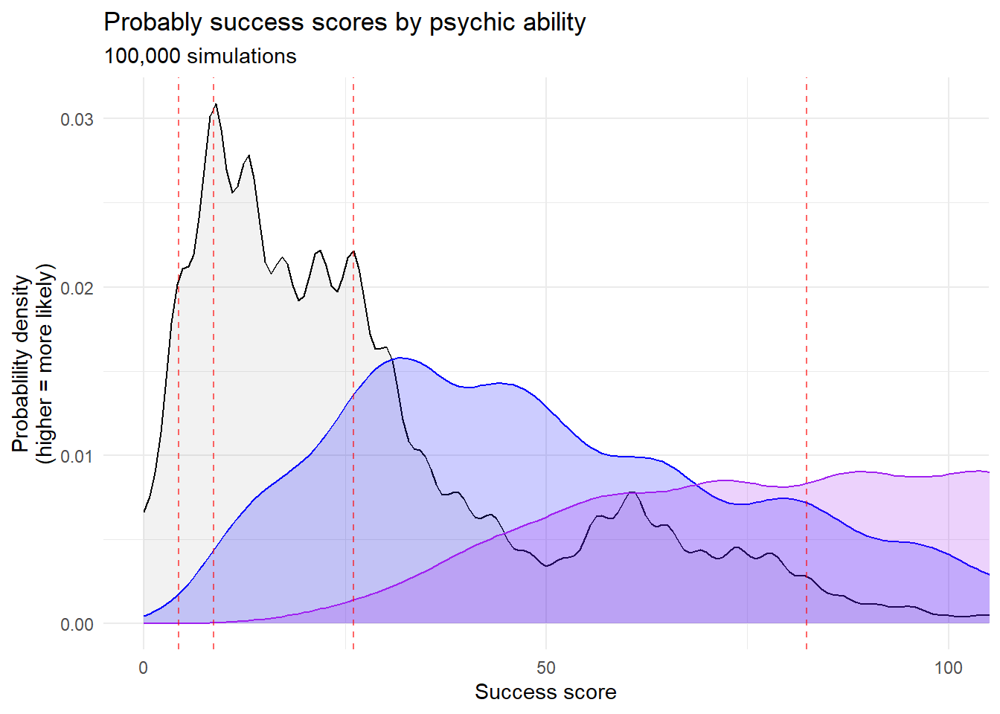

All the Right Questions August 2026
Welcome!
Welcome to the 2nd edition of All the Right Questions: The new monthly newsletter for Church Army staff in which we think together about how we can get, share and use the data that we need to do the work that God has called us to. The format is still evolving, but I’m hoping to use this space to signpost resources, celebrate successes and remind you all that I exist and that I care about your professional relationship with data.
Thanks so much for joining me here. If you’ve got any questions, or if there’s anything you’d like to see covered in a future edition of ARQ, please let me know! Drop me an email (I’m david.lovell), or just come and say hi to me at my desk.
This newsletter isn’t an official Church Army publication and as such it doesn’t represent the views of Church Army. Just me, Data Dave.
This week:
- Really Good Survey Training in October: I’m very excited about it
- The lesson: Alex Dobson has psychic powers
- A Small Idea: The grammar of data collection
- An incredible achivement: Printing custom QR-codes onto sticky-labels
- The puzzle: Not really a puzzle at all - test yourself for psychic powers and get featured in the next episode of All the Right Questions!
Really Good Survey Training in October!
Last month I promised you an update on the really good survey design training I would be running. This is that update: Please join me in the Carlisle Room at 9am on Thursday 15th October for an exhilarating morning that will equip you with the tools you need to ensure that purpose permeates every question of every survey you ever write again. If you ever write surveys (even little ones) for your job, then this is for you.
Click here to request your exclusive invitation to this much-anticipated event. Spaces are limited!
A small idea: The grammar of data collection
It’s a small idea this week because the newsletter is one day late and I’ve got other things to be getting on with - plus I went pretty big on some other aspects of this month’s edition, as you will soon see.
I’ve been thinking about how data collection mechanisms have a kind of ‘grammar’ which articulates reality in a particular way. The grammar of data collection promotes a particular culture and a particular idea of what’s valuable, and it often locks us into reporting on reality in a certain way.
For example, the way that we’ve historically collected impact data from Centres of Mission has prioritised ‘Activities’. We’ve asked people what kinds of activities their Centre of Mission runs, and then how long, frequent and well-attended each of those activities is. Choosing to collect data in this way has a few different implications:
- It may have conveyed to the evangelists who work for Church Army that we expected them to run a number of different, discrete activities, and that we would grade the success of their ministry on the number of these activities, and the number of people who attended them.
- It locked us in to describing our work, at the highest level, in terms of activities and their attenders. Our impact report might have featured a headline along the lines of ‘This year, our Centres of Mission have run over X,000 hours of activity, with over X0,000 combined attenders.’ On reflection, that isn’t a very coherent summary of the value that’s added by our work.
- It did not always capture the true nature of the work our evangelists do, which often involves sticking with individuals through chaotic and changing circumstances as they engage in a number of different ways.
None of these things necessarily means that this was ‘bad grammar’. All data collection necessarily views things in one way and not in another, and the practicalities of getting consistent data from multiple contexts requires a degree of simplification. But it continues to bother me that the way we chose to understand and articulate our impact was so different to the way in which our commissioned evangelists understand and articulate the value of their work on the ground. If you’ve got any reflections on any of this honestly please share them with me - it’s a big, complicated puzzle that will take real wisdom to solve.
Something I’m proud of: Customised QR-codes on address labels!
Last month this section was all a mistake I’d learned from. This week it’s about something cool I’ve achieved! It’s my newsletter and I’ll do what I like.
This is the cool thing I have done:

More specifically, it’s customised QR codes printed onto postage labels. This opens up some really cool possibilities for data collection using physical media, because it lets us attach metadata to a survey link and then physically stick it onto the corresponding piece of paper. That means you can do things like:
Pre-populate a survey with someone’s contact details, saving them time.
Group learners and facilitators into cohorts when they give feedback on a physical training resource.
Automatically collect data on where responses have come from, even when using physical resources.
Another really nice feature of this approach is its flexibility - you can include a generic QR code in your printed resource, then use customised labels to add data to the URL on a case-by-case basis. The only real limitation is your capacity to stick labels on to things.
I’ve used postage-sized labels here, but this works with labels of any size. Let me know if you think it could be useful for any of your projects!
You can view the code here if you’re really interested.
The lesson: Alex Dobson has Psychic Powers
It’s a time of change and growth for Church Army; a time of new faces, new challenges and new opportunities. It’s a time for evaluating who we are, what we have and where we are going. It’s the time to ask, “Does anybody in the Mission Support Team have psychic powers?”
Within the British non-profit sector, psychic ability is perhaps the most neglected area of talent-management: Most UK charities have no formal framework for recognising, promoting or developing any of major schools of psychic ability.
With this in mind, I took it upon myself to conduct an initial pilot test for clairvoyance. The purpose of this test was purely to develop our organisational methodology for such testing, but by a stroke of good luck it has inadvertently uncovered a savant within our midsts - I am pleased to report that Alex Dobson has a moderate aptitude for predicting the future.

Welcome to the first part of an exclusive ARQ two-parter. This month, we are going to delve deeper into the discipline of statistical modelling. Join us again in September, when we will consider how to make sense of the results by determining just how psychic Alex may or may not be. As always, my hope is to help you to build an instinctive understanding of how statistics work, so that you can scrutinise data and think creatively about asking All the Right Questions.
The psychic test
I have subjected no fewer than four of my colleagues to the following test:
- Each subject blind draws 10 cards from a standard 52 card deck.
- Prior to each draw, the participant guesses what the next card will be.
- Each subject receives a success score on the basis of their accuracy.
Success points are awarded for each of the following:
- Correctly guessing a card (suit and rank1)
- Correctly guessing suit alone
- Correctly guessing rank alone
For each of these outcomes, points are awarded in proportion to the improbability of the event. A perfect guess is worth 52 points, and guesses of suit and rank are worth about 4 and 13 points respectively. The scores are constructed in such a way that a non-psychic person should receive, on average, a total of 30 points.
Alex Dobson scored 82.3.
Does Alex really have psychic powers?
You probably don’t believe that Alex Dobson truly has psychic powers2. You may, however, believe that ‘you can prove anything with statistics’.
This test is not intended to undermine your confidence in statistics by ‘proving’ that statistics can ‘prove anything’. As a matter of fact, statistics can prove nothing by themselves - they merely corroborate existing theories about the real world.
Psychic testing is just a fun way of exploring statistical modelling along with some other abstract concepts - including the inherent limitations of statistical process.
The statistical model
The first step in any statistical process is to define your hypothesis. A hypothesis is a hunch about how things are in the real world, and you should be able to explain it in everyday language. Our hypothesis is simply that People with an inherent psychic ability will be uncannily good at guessing cards.
We need to construct our hypothesis before we make our statistical model because the hypothesis tells us what the parameters of our model ought to be. In this case, our parameters are:
- Psychic ability
- Ability to guess cards
Building our model involves creating a number which can represent each of those things, so that we can explore the relationship between the two numbers.
Remember the ‘success score’ we gave to each participant for guessing cards correctly? That is the number - or measure - that we are using to describe each participant’s ability to correctly guess cards. The beauty of the success score is that it allows us to describe any ten guesses with a single value, which lets us do things like this:
Those are the success scores of 100,000 people, each drawing ten cards. None of them are psychic.
A couple of things to note:
- The average score is 30, which means our simulation is working as expected
- The graph is quite wibbly, because there are a limited number of possible scores a person can get by drawing 10 cards
- The distribution is heavily skewed: Although the average is 30, most people get fewer points. A small number bring up the average by getting massive scores.
This data is not normal
Wibbly-wobbly graphs like this one can make it quite tricky to do statistics, because lots of the go-to methods don’t work on this kind of data. It’s also difficult to make clear, concise statements about this kind of data - the mean score of 30 doesn’t really do justice to the underlying reality.
But what about a person’s psychic ability? How can we assign a numerical measure to something so mysterious? I have done it as follows:
A person’s psychic power is a number between 0 and 1, and it represents the likelihood that they will psychically discern the suit or the rank of any given card. If a person’s psychic score is 1, they will psychically discern the suit and rank of every card. If a person’s psychic score is 0, they will never psychically discern anything about a card - but they could still make a lucky guess. If a person’s psychic score is 0.1, then they will:
- Psychically discern the suit of a card 10% of the time.
- Psychically discern the rank of a card 10% of the time.
They will therefore psychically discern the suit and rank of a card 1% of the time - in addition to any lucky guesses they might make.
This was not the only way of measuring psychic ability, and it’s almost certainly not the best way. I’ve made lots of assumptions about how psychic powers work. To name a few:
- A person’s psychic power has an equal effect on their ability to ‘read’ the suit of a card as its rank.
- A perfect reading is simply a matter of reading suit and rank simultaneously.
- Guessing a card of a similar rank (eg. 8 instead of 9) does not reflect psychic power.
- Guessing a card of the same colour (eg. hearts instead of diamonds) does not reflect psychic power.
If I had chosen another way of measuring psychic power, the results of my evaluation would have been different. The results mean nothing outside of the context of the model and its assumptions about the real world, and accepting the results entails accepting the assumptions of the model. But by far the biggest assumption made by this model is that psychic powers are real. We are not out to prove that psychic powers are real, but instead to work out how much psychic power our colleagues have.
We won’t actually get to evaluting the psychic abilities of our colleagues this week, but we will make the first step towards that goal, which is the simulate the distribution of scores that would be received by people who had psychic powers. We’ve already seen a simulation of the scores of 100,000 people with no psychic power, but now that we have defined our measure we can simulate scores for any level of psychic power. Here are the score distributions for 0, 0.1 and 0.25 alongside one another:

You’ll notice that as psychic score increases, the plot looks less like a big, jagged mountain, and more like a big, yummy jelly. That’s because a higher psychic ability makes things more predictable, because your overall score is less dependent on being lucky.
How psychic are our colleagues
We’re not going to answer that question this week. But I’ll help you to get your brains ready for that by zooming in on the graph a bit and superimposing the scores of the four colleagues I tested onto the graph. I haven’t labelled them, but Alex’s score is the one that’s way off to the right:

You’ll notice that Alex’s score intersects all three of the graphs above. So it’s completely feasible that he’s got no psychic power and he’s just in the small percentage of people who made a few lucky guesses. But if we accept this model’s (huge) assumptions about psychic power, then this kind of score is more probable for someone who has some psychic power than for someone who has none.
So how much psychic power do your colleagues have? Join me here next month to find out. The answer, as I have said, will not be simple.
The Puzzle
Not actually a puzzle at all. It’s your turn to test yourself for psychic powers, using this clever widget I’ve built. Tune in next month to find out whether or not you are psychic!